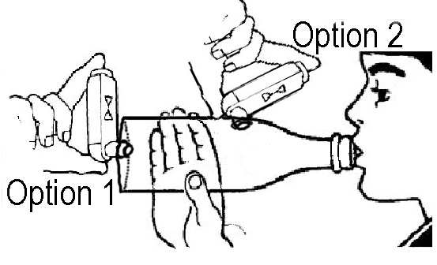

Acute Asthma
REMEMBER
Life-threatening features:
Cyanosis, silent chest, exhaustion, poor respiratory effort, agitation, low BCS
CALL FOR SENIOR HELP |
Like in all emergencies - approach patient with an ABCDE-assessment!
Important points in history
General
- Age group (Asthma is rather a disease of school children and adolescents. Consider bronchiolitis and/or viral induced wheeze if the children are very young)
Acute features
- Breathlessness (what can they no longer do? Did they stop feeding/ talking?)
- Wheeze/ prolonged expiration
- Cough
- Fever (pure asthmatic attack will usually not have fever unless exacerbated by infection)
- Did the child manage to sleep last night
Chronic features
- History of precipitating factors, e.g. URTI, exercise, exposure to pollen or dust, heating system in the house
- History of previous episodes including severity, whether hospitalised, and if so for how long, any admissions needing oxygen
- History of prior treatment and compliance
- History of 'interval symptoms' - cough/wheeze at night, coughwheeze after exercise, prolonged recovery from URTIs, level of activity, school attendance
- Family history of asthma or atopy (hay fever, eczema, allergic rhinitis)
Differential Diagnosis
Complications
- Pneumothorax
- Secondary bacterial infection
- A chest xray will usually not be necessary but should be obtained if
- The condition worsens, there are unequal chest signs, or
- There is doubt about the diagnosis
Definitions of severity of asthma
Mild
- Audible wheeze
- No respiratory distress
- Feeding well
- O2 sats >92%
- No signs of moderate asthma
Moderate
- Respiratory distress
- Use of accessory muscles
- Still feeding well
- Sats >92 %
- No signs of severe asthma
Severe
- Marked respiratory distress
- Too breathless to talk/ feed
- RR >30 if >5 years
RR >50 if 2-5 years
- Sats <92%
Treatment
(nota bene: if inhalers and spacers cannot be obtained then start with nebulised Salbutamol at below mentioned doses and switch to inhalers later)
Mild Asthma
- Salbutamol or Albuterol inhaler via spacer (and facemask if <3 years)
- 2 puffs 4 hourly for 2-3 days
- Discharge with advice:
- Inhaler and spacer technique
- Avoid allergens
- Return if worsens
Moderate Asthma
Severe or life-threatening Asthma
REGULAR REASSESSMENT
CONSULT SENIOR
- OXYGEN
- At 1-2l/min over nasal prongs or at least 5l/min over face mask
- SALBUTAMOL NEBULISER (3 back-to-back to start with)
- <4 years: 2.5 mg
>4 years: 5 mg
Think about starting steroids while doing back-to-back Nebs if they don't show effect
CALL FOR SENIOR HELP HERE IF NOT IMPROVING
- STEROIDS
(steroids need at least 30 min. for the effect to kick in)
Continue Salbutamol Nebs meanwhile
- Oral Prednisolone 1-2 mg/kg PO STAT - (max. dose 40 mg)
- Alternatively: oral Dexamethasone 0.6 mg/kg STAT - (max. 10 mg)
- OR alternatively: Hydrocortisone IV ( <5 yrs: 50mg; >5 yrs: 100mg IV STAT)
monitor for tachycardia, deterioration or improvement
Give salbutamol every 15 min, then see if you can spread out to 30 min or 60 min according to state of the patient)
- 2/3 maintenance IV fluids plus 20 mmol KCl per litre of fluid
Continue Salbutamol Nebs meanwhile
If not improving
Continue Salbutamol Nebs meanwhile
- Consider IV Magnesium-sulphate (see below)
- Consider IV Aminophylline - ONLY WITH SENIOR INPUT (see below)
- Consider chest x-ray (? Pneumothorax? Foreign body)
- Consider ITU
Drug dosages
Magnesium-Sulphate
- 40 mg/kg (diluted to at least 10 %) over 20 min. Monitor BP (see BNF and look at ampoule concentration)
- Safer than aminophylline
- Available in oncology or labour ward
Aminophylline - CAUTION
- loading dose = 5mg/kg (max. 300 mg) diluted (maximum concentration 25mg/mL) and administered over 20mins (maximum rate should not exceed 25mg/min) then 1 mg/kg/hr ONLY WITH SENIOR INPUT (see BNF)
- If the child has been on maintenance theophylline or has been taking erythromycin, the loading dose of aminophylline should be omitted
- These children will need very careful monitoring. Signs of potential aminophylline reaction
- Tachycardia (pulse rate of >180/min) - contact senior if concerned
- Headache or convulsion
- Vomiting
- Flushing
|
Supportive Care
- Ensure intake of daily maintenance fluids appropriate for age. This can be orally or IV.
- Encourage continued breast feeding
On discharge
- Prescribe salbutamol via spacer 2-4 puffs 4 hourly for 2-3 days, then as required
- To complete 3 days of prednisolone or to give a second dose of dexamethasone (24 hours after the first one) before discharge
- Teach inhaler and spacer technique
- Avoid allergens
- Consider rethinking pre-existent background therapy, may need additional medication
Review in General Clinic (Wednesdays 1:30pm) if needing inhaler >3 times per week or if this is second presentation to hospital
Chronic/ ongoing Asthma
Medication
All children (except mildest wheeze) need a Salbutamol inhaler on discharge for when the child is acutely breathless or wheezy
If >1 asthma attack, consider daily Beclomethasone inhaler
- patients must come back from pharmacy with the inhaler to work out dosage
- < 2 years: 100 mcg BD
- 2-12 years: 200 mcg BD
- 12-18 years: 200-400 mcg BD
'Interval Symptoms' (cough/wheeze at night or after exercise, prolonged recovery from URTIs) are guides to poorly controlled asthma. The child should come back to general clinic
Guardian education
- How and when to take inhalers (this will need to be observed)
- How to use a spacer
- When to seek help (i.e. breathlessness not controlled by inhalers, sudden increase in the need for 'relievers')
- Possible precipitating factors
Follow up
- General clinic (1:30pm Wednesdays) in one months time if new diagnosis
- May need to be sooner if asthma was severe or life-threatening.
How to make and use a SOBO Bottle spacer - 2 options of placing inhaler

- Wash bottle out with soapy water. Shake and leave to dry.
- Cut an X into the end of the bottle with hot wire or razor. If the end of the bottle is too tough to cut, the hole for the inhaler can be cut into the side of the bottle.
- For a tighter fit you can make the hole just a bit too big and then put tape around it for a better seal.
Steps for use
- Shake inhaler
- Insert inhaler into the hole in the bottle
- Teach the child to form a tight seal around the mouthpiece of the bottle
- Apply a puff from the inhaler into the bottle
- Count for 10 seconds whilst the child breathes in and out (10 breaths)
- Take inhaler out of bottle and shake to mix
- Repeat steps 1-6 to give the number of puffs needed.
For children under 3 years
Attach a face mask to the mouth piece of the bottle. If the mask has holes in it, put tape over these. Follow above steps. Needs 2 people.
Spacer care
Wash once a week in soapy water and leave out in the sun to dry. Do not dry inside with a cloth.
Outlook
Eventually there will be asthma diaries and informative leaflets for the families available in the department.
{kind=link}